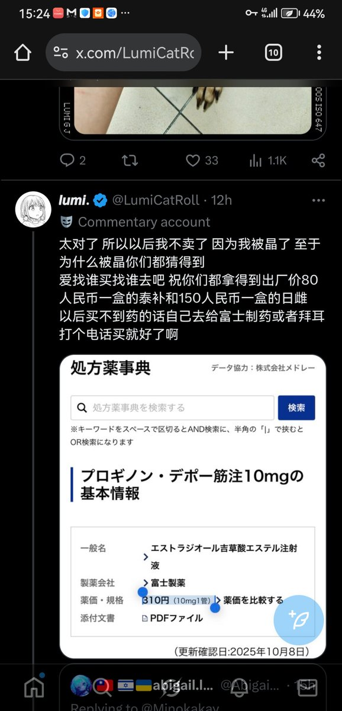

小虚空🍥
@tokerumaisurii
@AbigailLector 你让你爹努努力当上正部级的海关总署署长然后你去卖日雌，给你大批全数放行，不需要找货运途径只用最便宜的，罩着你不被抓，你就可以在考虑了自己的合理薪资的情况下不卖三百多只卖两百多都不亏了。

🇹🇼 🇮🇱🇺🇦abigail.lector🇰🇷
@AbigailLector
我發帖討論這事不是要攻擊誰，就是要所有跨都知道如同貓卷君在當下心境中說出的實話：“日雌就是150一盒”，不易買到，所以有了藥商 但是藥商不應該翻幾倍的敲詐錢，像那種三百多四百多五百多就應該抵制，市場因為需求才存在，越慣著他們，他們把所有跨當冤大頭來宰殺。 https://t.co/1zNpYbtTg0